GraphML · Group 02
Graph Learning Pipeline
for Architectural Floor Plans
Node classification on the Narkomfin Building using GraphSAGE — from redrawn geometry to a labelled spatial graph and predicted room types.
Final AssignmentMaCAD 2025/26 · IAAC
Digital Tools for Graph Machine Learning
Digital Tools for Graph Machine Learning
Lakzhmy Zaro · María Sánchez
Charles Abi Chahine · Emilie El Chidiac
Charles Abi Chahine · Emilie El Chidiac
Contents
What we cover.
01
Modified Swiss Dwellings
A benchmark of 5,372 residential floor plans encoded as spatial graphs
02
Literature
Two papers and one pretrained GraphSAGE-Pool model
03
Data Structure
Nodes, edges, features and ground-truth room-type labels
04
The Narkomfin Building
Dom-kommuna, two unit types, one ideal graph-ML subject
05
Graph Analysis
Centrality measures, shortest paths and spatial logic
06
Node Classification
Room-type prediction from zoning features using GraphSAGE
GraphML_G02
01 / 18
01 — Dataset
Modified Swiss Dwellings.
5,372 floor plans
Multi-apartment clusters
Corridor buildings
Single units
Graph modality
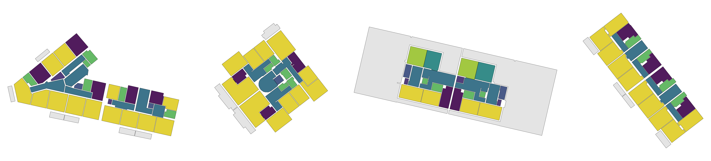
Three sample plans — a wide variety of residential typologies, scales and orientations · node colour encodes room type
5,372
Floor Plans
9
Room Types
4
Zone Types
.pickle
Graph Format
GraphML_G02
02 / 18
02 — Literature
Two papers, one pipeline.
Paper 01
MSD: A Benchmark Dataset for Floor Plan Generation of Building Complexes
ECCV 2024 · TU Delft
- 5,372 Swiss residential floor plans
- 3 modalities: image, geometry, graph
- Graph encodes spatial zones, not room types
Primary data source for this project.
Paper 02
GNN for Node Classification & Attribute Allocation in Architectural BIM
eCAADe 2024 · Cardiff University
- Same MSD dataset, graphs via TopologicPy
- Benchmarks GCN, GAT, GraphSAGE
- GraphSAGE-Pool, 4 layers, ~95% accuracy
Pretrained model applied to our floor plan.
GraphML_G02
03 / 18
03 — Data Structure
What the graph encodes.
graph_in — model input
| Attribute | Type | Values |
|---|---|---|
| zoning_type | int | 0 · 1 · 2 · 3 |
| connectivity | str | 'door' · 'entrance' |
graph_out — ground truth
| Attribute | Type | Description |
|---|---|---|
| room_type | int | 0 – 8 |
| geometry | Polygon | 2D room outline |
| centroid | Point | centre of room |
Room types (0 – 8)
| ID | Room | ID | Room |
|---|---|---|---|
| 0 | Bedroom | 5 | Stairs |
| 1 | Living room | 6 | Storeroom |
| 2 | Kitchen | 7 | Bathroom |
| 3 | Dining | 8 | Balcony |
| 4 | Corridor |
Zone types (0 – 3)
| ID | Zone | Typical rooms |
|---|---|---|
| 0 | Private | bedroom |
| 1 | Dynamic | corridor, entrance |
| 2 | Static | bedroom, bathroom |
| 3 | Functional | kitchen, storeroom |
GraphML_G02
04 / 18
03 — Data Structure
From floor plan to graph.
Zone label per node
zoning_type input
→
Graph topology
door / entrance edges
→
Room type prediction
GraphSAGE-Pool output
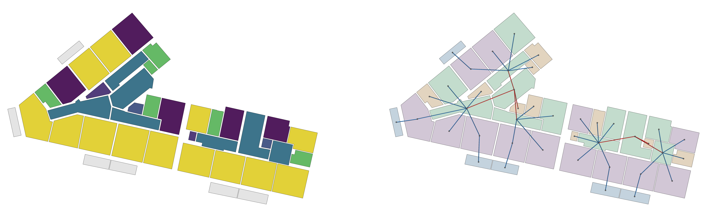
Room types — left plan
Zone types — right plan
0 – Private
1 – Dynamic
2 – Static
3 – Functional
Edge types
door
entrance
GraphML_G02
05 / 18
Process
One building, two paths, one read.
Decision
The
Narkomfin
Narkomfin
our case study
Geometry
Floor Plan
2D plan, redrawn
Spatial Analysis
How each room sits within the circulation network.
02.1 OBJ→BREP · 02.2–02.4 centrality & shortest path
How it works
The plan is grid-sliced into a Topologic shell, from which navigation & analysis graphs are derived. Metrics: closeness = integration, betweenness = choice, plus degree, community detection and isovist visibility.Geometry
Simplified 3D
rooms as volumes
Graph Preparation
Encode the 3D model as a labelled input graph.
03.0 Rhino→cell complex · 03.1 label nodes & edges
How it works
Named Rhino room volumes + aperture surfaces build a TopologicPy CellComplex & room graph. MSD features encoded: 4-class zoning_type, door / passage / entrance connectivity, exported to CSV for GraphSAGE.Prediction
Infer room types from zoning.
03.2 GraphSAGE-Pool
Outcome
Conclusion
what the graph knows
GraphML_G02
06 / 18
04 — The Narkomfin Building
A machine for collective living.
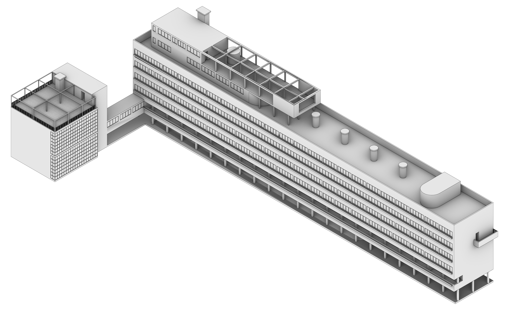
Architects
Ginzburg & Milinis
Year
1930
Location
Moscow, Russia
Typology
Dom-kommuna
Scale
54 units · 6 floors
Unit types
F · K
GraphML_G02
07 / 18
04 — The Narkomfin Building
Why it maps to graph ML.
01
Clear spatial hierarchy
Discrete living cells and corridors form a readable room-to-room structure.
02
Repetitive unit typologies
Two unit types — F-type and K-type — repeat cleanly across every floor.
03
Explicit functional zoning
A dom-kommuna where living, communal and circulation zones are clearly defined.
GraphML_G02
08 / 18
04 — The Narkomfin Building
Simplified model, rooms as volumes.
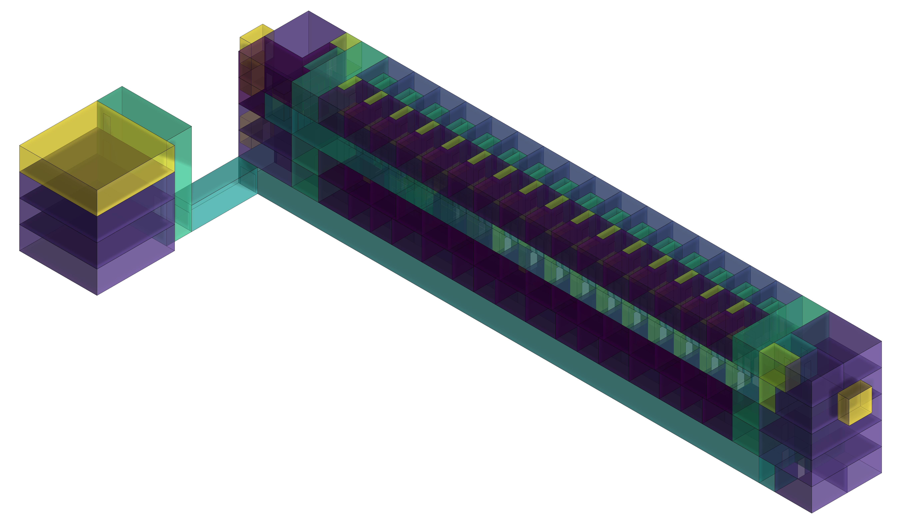
Node colour encodes room type
GraphML_G02
09 / 18
04 — The Narkomfin Building
Exploded axonometric by floor type.

Amenities
F-type
K-type
Node colour encodes room type
GraphML_G02
10 / 18
04 — The Narkomfin Building
K-type & F-type, five levels.

K-type
L2
L1
F-type
L5
L4
L3
Node colour encodes room type
GraphML_G02
11 / 18
05 — Graph Analysis
Closeness centrality, Type K.
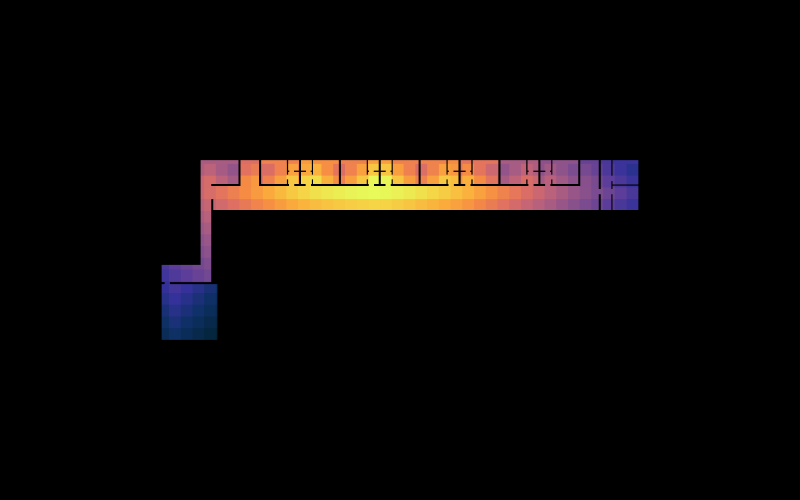
- Corridor scores highest — fewest steps to every room
- Closeness drops steadily into private cells
- Staircase block scores lowest — dead-end terminal
- Corridor is the social and circulatory core
high integrationlow integration
GraphML_G02
12 / 18
05 — Graph Analysis
Betweenness centrality, Type K.
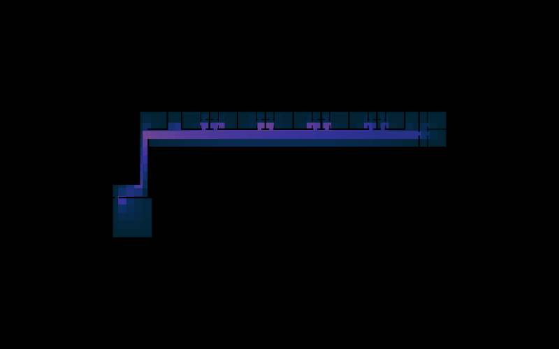
- Central corridor sections carry the most traffic
- Every cross-building journey passes through them
- End rooms have near-zero betweenness — destinations only
- Corridor is the most traversed and most accessible spine
high trafficlow traffic
GraphML_G02
13 / 18
05 — Graph Analysis
Shortest path, Type K.
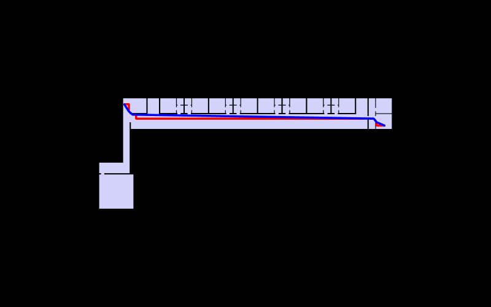
- Grid and straightened paths are nearly identical
- Only 3.7% shorter when straightened
- Corridor is already the straightest possible route
- Optimal path and only social route are the same
grid path · 77.2 u
straightened · 74.4 u
GraphML_G02
14 / 18
06 — Node Classification
Room type prediction, K-type.
67.9%
rooms correctly classified · 55 / 81
55
Correct
26
Errors
81
Rooms
Where it went wrong · true → predicted
10
Living room→Kitchen
9
Stairs→Storeroom
6
Living room→Corridor
1
Stairs→Bathroom
Errors cluster on rooms with near-identical connectivity — living rooms read as kitchens and stairs as storerooms.
Ground truth
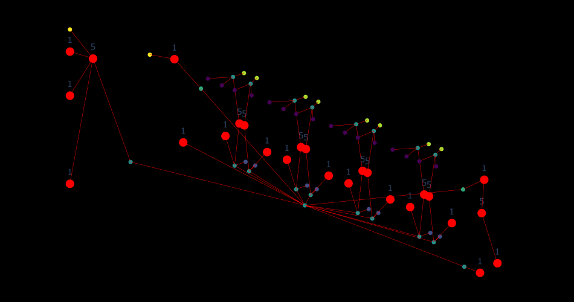
Prediction
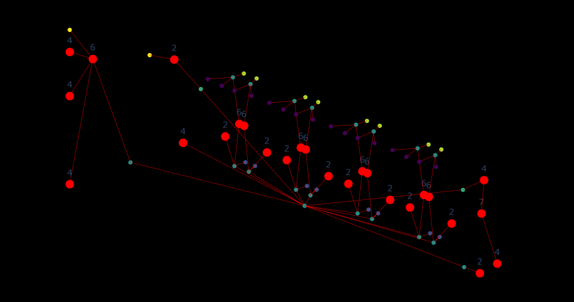
GraphML_G02
15 / 18
06 — Node Classification
Room type prediction, F-type.
91.3%
rooms correctly classified · 210 / 230
210
Correct
20
Errors
230
Rooms
Where it went wrong · true → predicted
16
Kitchen→Corridor
2
Living room→Corridor
1
Storeroom→Bathroom
1
Bathroom→Stairs
16 of 20 errors are kitchens predicted as corridor — the single dominant blind spot; everything else is near-perfect.
Ground truth
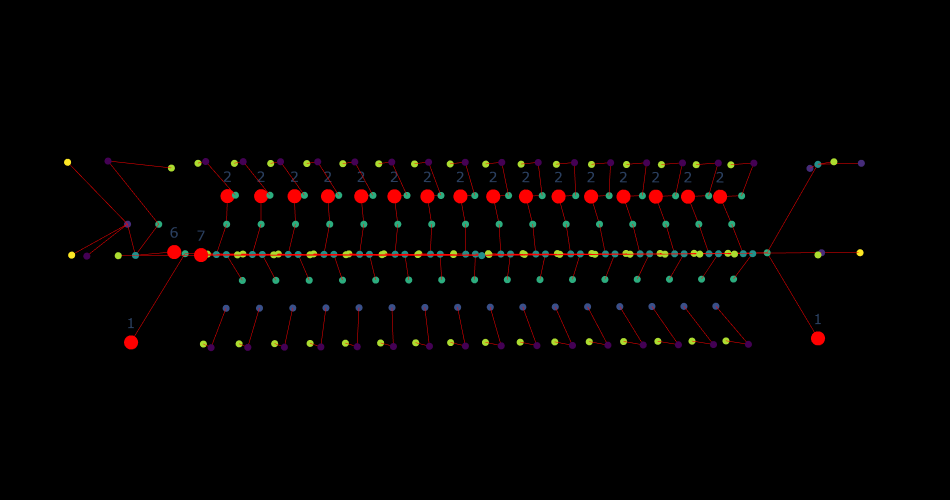
Prediction
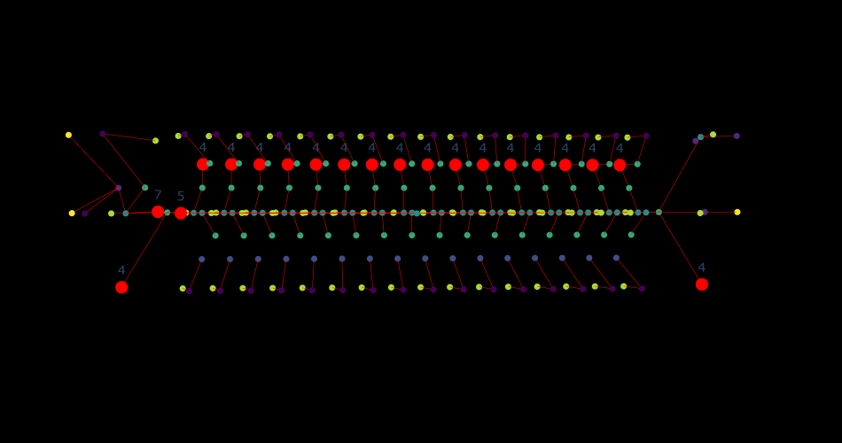
GraphML_G02
16 / 18
Conclusion
What the prediction tells us.
91.3%
F-type · 210 / 230 rooms
in-distribution
vs
67.9%
K-type · 55 / 81 rooms
out-of-distribution
Same pretrained model, same building — two very different results.
01
It generalizes — unevenly
F-type's duplex apartments resemble the Swiss Dwellings the model trained on, so it scores 91%. K-type's communal dom-kommuna layout is unlike anything in training — accuracy falls to 68%.
02
Errors are systematic
Mistakes aren't random — rooms sharing a connectivity signature get swapped: living rooms ↔ kitchens, stairs ↔ storerooms, open kitchens read as corridor. The graph confuses what is topologically alike.
03
Topology captures convention
Connectivity alone reads conventional plans well. The Narkomfin's social-condenser program — its whole point — is exactly what challenges the model. Richer features or fine-tuning would close the gap.
GraphML_G02
17 / 18